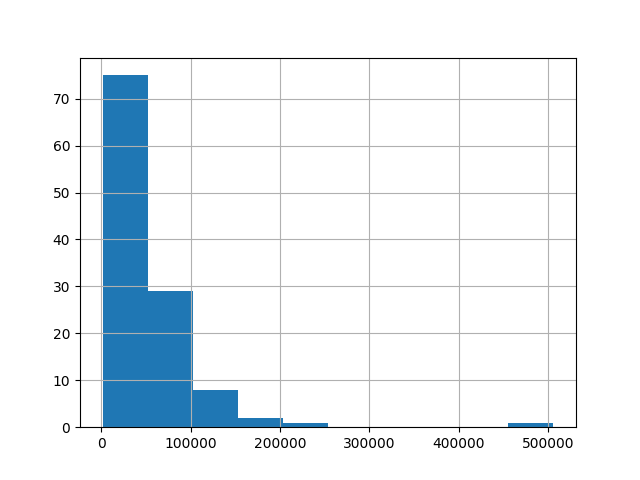
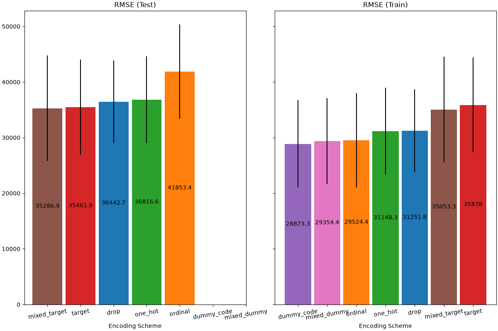

Comparing DummyCode Encoder with Other Encoders#
The DummyCodeEncoder to encode each categorical features into
dummy/indicator 0/1 variables. In this example, we will compare various
different approaches for handling categorical features:
GetDummies, TargetEncoder,
OrdinalEncoder, OneHotEncoder,
and dropping the category.
Note
fit(X, y).transform(X) does not equal fit_transform(X, y) because a
cross fitting scheme is used in fit_transform for encoding. See the
User Guide for details.
# Authors: The scikit-plots developers
# SPDX-License-Identifier: BSD-3-Clause
Loading Data#
First, we load the “autoscout24” dataset:
from scikitplot.datasets import load_dataset
df = load_dataset("autoscout24")
df
| id | price | make | model | model_version | registration_date | mileage_km_raw | vehicle_type | body_type | fuel_category | primary_fuel | transmission | power_kw | power_hp | nr_seats | nr_doors | country_code | zip | city | latitude | longitude | is_used | seller_is_dealer | offer_type | description | equipment_comfort | equipment_entertainment | equipment_extra | equipment_safety | |
|---|---|---|---|---|---|---|---|---|---|---|---|---|---|---|---|---|---|---|---|---|---|---|---|---|---|---|---|---|---|
| 0 | 1df9ec13-c5a4-4d6d-85cd-dc198b43ed36 | 36900.0 | Mercedes-Benz | CLA 180 | SB AMG Night Edition Pano/StdHG/Dist/Tot | 2025-07-01 | 3500.0 | Car | Other | Gasoline | Super 95 | Automatic | 100.0 | 136.0 | 5.0 | 5.0 | DE | 86633 | Neuburg an der Donau | 48.727590 | 11.200660 | False | True | U | <ul><li>Fahrzeug-Nr. für Kundenanfragen: 05502... | ['360° camera', 'Armrest', 'Automatic climate ... | ['Android Auto', 'Apple CarPlay', 'Bluetooth',... | ['Alloy wheels', 'Ambient lighting', 'Automati... | ['ABS', 'Adaptive Cruise Control', 'Adaptive h... |
| 1 | 9f455135-68ca-4dd8-aa39-139b27a7dcf2 | 147990.0 | Porsche | Panamera | 4 E-Hybrid*SPORT-DESIGN*EXCLUSIVE-MANUFAKTUR*B... | 2025-05-01 | 16990.0 | Car | Compact | Electric/Gasoline | Super 95 | Automatic | 346.0 | 470.0 | 4.0 | 5.0 | AT | 8141 | Premstätten | 46.956710 | 15.402450 | True | True | U | Dieser neue <strong>Porsche Panamera 4 E-Hybri... | ['360° camera', 'Air conditioning', 'Air suspe... | ['Android Auto', 'Apple CarPlay', 'Bluetooth',... | ['Alloy wheels (21")', 'Ambient lighting', 'Au... | ['ABS', 'Adaptive Cruise Control', 'Adaptive h... |
| 2 | b1c0eaff-a414-49f3-bf20-dd3672fe5233 | 26900.0 | BMW | 320 | d Touring mhev 48V Luxury auto | 2020-09-01 | 62503.0 | Car | Station wagon | Electric/Diesel | Electricity | Automatic | 140.0 | 190.0 | 5.0 | 5.0 | IT | 12100 | Cuneo - Cn | 44.425960 | 7.556430 | True | True | U | <strong>Prima di recarsi presso una nostra sed... | [] | [] | [] | [] |
| 3 | e5f80b61-74ac-4394-8c0a-ec756145ae9b | 69900.0 | Porsche | 997 | 4S WLS GT3 AeroCup Klappe Chrono Bose 1.Hd ! | 2008-02-01 | 88017.0 | Car | Coupe | Gasoline | Regular/Benzine 91 | Automatic | 280.0 | 381.0 | 4.0 | 2.0 | DE | 89155 | Erbach | 48.302620 | 9.907480 | True | True | U | <strong>Porsche 997 Carrera 4S WLS Exclusive -... | ['Air conditioning', 'Armrest', 'Automatic cli... | ['CD player', 'Hands-free equipment', 'On-boar... | ['Alloy wheels', 'Automatically dimming interi... | ['ABS', 'Alarm system', 'Central door lock', '... |
| 4 | 9fc53b43-2210-4515-a499-2aa1c8e83e4d | 42264.0 | Mercedes-Benz | A 250 | e con tecnologí híbrida EQ | 2025-07-01 | 6000.0 | Car | Sedan | Electric/Gasoline | NaN | Automatic | 160.0 | 218.0 | 5.0 | 5.0 | ES | 46470 | VALENCIA | 39.403970 | -0.385390 | True | True | U | <strong>Precio al contado: 44800 euros</strong... | ['Automatic climate control', 'Cruise control'] | ['Bluetooth'] | ['Alloy wheels'] | ['ABS', 'Side airbag'] |
| ... | ... | ... | ... | ... | ... | ... | ... | ... | ... | ... | ... | ... | ... | ... | ... | ... | ... | ... | ... | ... | ... | ... | ... | ... | ... | ... | ... | ... | ... |
| 111 | 649dbdd4-d01b-4bd6-b712-47809b2651df | 1495.0 | Alfa Romeo | 147 | 1.6 T.Spark Progression | 2001-10-01 | 214745.0 | Car | Compact | Gasoline | Super 95 | Manual | 77.0 | 105.0 | 5.0 | 3.0 | NL | 1704 RX | HEERHUGOWAARD | 52.685610 | 4.830900 | True | True | U | Inruiler, zo mee!!<br /><br /><strong>Meer inf... | ['Air conditioning', 'Electrical side mirrors'... | ['CD player', 'Radio'] | [] | ['ABS', 'Alarm system', 'Central door lock', '... |
| 112 | 6dda33d9-579c-46e8-905c-885bd870d006 | 2500.0 | BMW | 320 | 320i | 2005-07-01 | 242100.0 | Car | Sedan | Gasoline | NaN | Manual | 125.0 | 170.0 | 5.0 | 4.0 | DE | 90411 | Nürnberg | 49.474428 | 11.103918 | True | False | U | Schäden vorne krilo, tsprapina Tür vorne recht... | ['Air conditioning', 'Armrest', 'Electrical si... | ['On-board computer'] | ['Alloy wheels', 'Emergency tyre'] | ['ABS', 'Alarm system', 'Central door lock wit... |
| 113 | f4168e59-46f6-417c-a51f-1e07f8e0a082 | 34350.0 | Alfa Romeo | Junior | Ibrida Q4 1.2 MHEV eAWD e-DCT6 | 2025-10-01 | 10.0 | Car | Off-Road/Pick-up | Gasoline | NaN | Automatic | 100.0 | 136.0 | 5.0 | 5.0 | AT | 4240 | Freistadt | 48.492650 | 14.503010 | False | True | N | Wunderschöner Alfa Romeo Junior Ibrida Q4, eAW... | ['Air conditioning', 'Armrest', 'Automatic cli... | ['Android Auto', 'Apple CarPlay', 'Bluetooth',... | ['Alloy wheels', 'Automatically dimming interi... | ['ABS', 'Adaptive Cruise Control', 'Adaptive h... |
| 114 | 9e36a6c7-b78d-45d2-acae-f42fb4d48239 | 25999.0 | BMW | 535 | 535d Touring Sport-Aut. | 2016-07-01 | 128000.0 | Car | Station wagon | Diesel | NaN | Automatic | 230.0 | 313.0 | 5.0 | 5.0 | DE | 85276 | pfaffenhofen | 48.529860 | 11.503230 | True | False | U | Saison Fahrzeug 5-10 ,original M-Paket von wer... | ['Air suspension', 'Armrest', 'Automatic clima... | ['Bluetooth', 'CD player', 'Hands-free equipme... | ['Alloy wheels', 'Cargo barrier', 'Electronic ... | ['ABS', 'Bi-Xenon headlights', 'Central door l... |
| 115 | 5add7191-7888-4d00-af1e-f279f9d5fdd7 | 1800.0 | BMW | 320 | 320i touring | 2001-01-01 | 231000.0 | Car | Station wagon | Gasoline | NaN | Manual | 125.0 | 170.0 | 5.0 | 5.0 | DE | 37351 | NaN | 51.342832 | 10.252152 | True | False | U | Zum Verkauf Steht ein BMW e46 320i vfl mit dem... | ['Air conditioning', 'Armrest', 'Automatic cli... | ['Android Auto', 'Bluetooth', 'CD player', 'Di... | ['Alloy wheels', 'Catalytic Converter', 'Emerg... | ['ABS', 'Central door lock', 'Central door loc... |
116 rows × 29 columns
df.info()
<class 'pandas.core.frame.DataFrame'>
RangeIndex: 116 entries, 0 to 115
Data columns (total 29 columns):
# Column Non-Null Count Dtype
--- ------ -------------- -----
0 id 116 non-null object
1 price 116 non-null float64
2 make 116 non-null object
3 model 116 non-null object
4 model_version 115 non-null object
5 registration_date 116 non-null object
6 mileage_km_raw 116 non-null float64
7 vehicle_type 116 non-null object
8 body_type 116 non-null object
9 fuel_category 116 non-null object
10 primary_fuel 57 non-null object
11 transmission 114 non-null object
12 power_kw 116 non-null float64
13 power_hp 116 non-null float64
14 nr_seats 112 non-null float64
15 nr_doors 111 non-null float64
16 country_code 116 non-null object
17 zip 116 non-null object
18 city 115 non-null object
19 latitude 116 non-null float64
20 longitude 116 non-null float64
21 is_used 116 non-null bool
22 seller_is_dealer 116 non-null bool
23 offer_type 116 non-null object
24 description 113 non-null object
25 equipment_comfort 116 non-null object
26 equipment_entertainment 116 non-null object
27 equipment_extra 116 non-null object
28 equipment_safety 116 non-null object
dtypes: bool(2), float64(8), object(19)
memory usage: 24.8+ KB
For this example, we use the following subset of numerical and categorical features in the data. Candidate target_features = [“seller_is_dealer”, “price”]
target_name = "price"
numerical_features = [
"seller_is_dealer",
"mileage_km_raw",
"power_kw",
"power_hp",
# "nr_seats",
"latitude",
"longitude",
]
categorical_features = [
# "id",
"make",
"model",
"body_type",
"fuel_category",
# "primary_fuel",
# "transmission",
]
equipment_features = [
"equipment_comfort",
"equipment_entertainment",
"equipment_extra",
"equipment_safety",
]
df = df[numerical_features + categorical_features + equipment_features + [target_name]]
df[equipment_features] = df[equipment_features].replace(r"\[|\]|'", "", regex=True)
df.T
| 0 | 1 | 2 | 3 | 4 | 5 | 6 | 7 | 8 | 9 | 10 | 11 | 12 | 13 | 14 | 15 | 16 | 17 | 18 | 19 | 20 | 21 | 22 | 23 | 24 | 25 | 26 | 27 | 28 | 29 | 30 | 31 | 32 | 33 | 34 | 35 | 36 | 37 | 38 | 39 | ... | 76 | 77 | 78 | 79 | 80 | 81 | 82 | 83 | 84 | 85 | 86 | 87 | 88 | 89 | 90 | 91 | 92 | 93 | 94 | 95 | 96 | 97 | 98 | 99 | 100 | 101 | 102 | 103 | 104 | 105 | 106 | 107 | 108 | 109 | 110 | 111 | 112 | 113 | 114 | 115 | |
|---|---|---|---|---|---|---|---|---|---|---|---|---|---|---|---|---|---|---|---|---|---|---|---|---|---|---|---|---|---|---|---|---|---|---|---|---|---|---|---|---|---|---|---|---|---|---|---|---|---|---|---|---|---|---|---|---|---|---|---|---|---|---|---|---|---|---|---|---|---|---|---|---|---|---|---|---|---|---|---|---|---|
| seller_is_dealer | True | True | True | True | True | True | True | True | True | True | True | True | True | True | True | True | True | True | True | True | True | True | True | True | True | True | True | False | True | True | True | False | True | True | True | True | True | True | True | False | ... | True | True | True | False | False | True | True | True | True | True | True | True | True | True | False | True | True | True | True | True | True | True | True | True | False | True | False | True | True | True | False | True | True | False | True | True | False | True | False | False |
| mileage_km_raw | 3500.0 | 16990.0 | 62503.0 | 88017.0 | 6000.0 | 15500.0 | 94600.0 | 25400.0 | 7033.0 | 72500.0 | 20300.0 | 160600.0 | 64308.0 | 12500.0 | 62280.0 | 53500.0 | 23196.0 | 87915.0 | 14000.0 | 85977.0 | 85497.0 | 235300.0 | 50.0 | 85593.0 | 21358.0 | 64626.0 | 177253.0 | 128000.0 | 114999.0 | 57600.0 | 37172.0 | 89500.0 | 109304.0 | 34000.0 | 150000.0 | 13819.0 | 77000.0 | 84000.0 | 1.0 | 196000.0 | ... | 8000.0 | 121188.0 | 55445.0 | 182300.0 | 110000.0 | 157495.0 | 62588.0 | 117554.0 | 93586.0 | 12850.0 | 88700.0 | 15250.0 | 14500.0 | 52000.0 | 199000.0 | 91000.0 | 9900.0 | 2900.0 | 56330.0 | 131703.0 | 9900.0 | 10000.0 | 5788.0 | 103000.0 | 159000.0 | 61885.0 | 123164.0 | 157526.0 | 87741.0 | 162000.0 | 380541.0 | 52041.0 | 67000.0 | 95000.0 | 39936.0 | 214745.0 | 242100.0 | 10.0 | 128000.0 | 231000.0 |
| power_kw | 100.0 | 346.0 | 140.0 | 280.0 | 160.0 | 200.0 | 195.0 | 283.0 | 150.0 | 404.0 | 220.0 | 140.0 | 183.0 | 110.0 | 111.0 | 135.0 | 127.0 | 103.0 | 230.0 | 100.0 | 140.0 | 140.0 | 588.0 | 110.0 | 346.0 | 110.0 | 85.0 | 110.0 | 120.0 | 100.0 | 135.0 | 293.0 | 110.0 | 375.0 | 120.0 | 150.0 | 150.0 | 100.0 | 92.0 | 110.0 | ... | 145.0 | 140.0 | 110.0 | 190.0 | 140.0 | 390.0 | 272.0 | 404.0 | 135.0 | 353.0 | 100.0 | 90.0 | 430.0 | 110.0 | 110.0 | 190.0 | 145.0 | 185.0 | 180.0 | 165.0 | 110.0 | 180.0 | 66.0 | 100.0 | 125.0 | 280.0 | 125.0 | 293.0 | 96.0 | 140.0 | 120.0 | 283.0 | 210.0 | 206.0 | 455.0 | 77.0 | 125.0 | 100.0 | 230.0 | 125.0 |
| power_hp | 136.0 | 470.0 | 190.0 | 381.0 | 218.0 | 272.0 | 265.0 | 385.0 | 204.0 | 549.0 | 299.0 | 190.0 | 249.0 | 150.0 | 151.0 | 184.0 | 173.0 | 140.0 | 313.0 | 136.0 | 190.0 | 190.0 | 799.0 | 150.0 | 470.0 | 150.0 | 116.0 | 150.0 | 163.0 | 136.0 | 184.0 | 398.0 | 150.0 | 510.0 | 163.0 | 204.0 | 204.0 | 136.0 | 125.0 | 150.0 | ... | 197.0 | 190.0 | 150.0 | 258.0 | 190.0 | 530.0 | 370.0 | 549.0 | 184.0 | 480.0 | 136.0 | 122.0 | 585.0 | 150.0 | 150.0 | 258.0 | 197.0 | 252.0 | 245.0 | 224.0 | 150.0 | 245.0 | 90.0 | 136.0 | 170.0 | 381.0 | 170.0 | 398.0 | 131.0 | 190.0 | 163.0 | 385.0 | 286.0 | 280.0 | 619.0 | 105.0 | 170.0 | 136.0 | 313.0 | 170.0 |
| latitude | 48.72759 | 46.95671 | 44.42596 | 48.30262 | 39.40397 | 51.78649 | 50.79976 | 50.88688 | 48.3468 | 51.09111 | 51.4595 | 48.50503 | 52.29444 | 48.11777 | 40.30452 | 49.11204 | 49.49586 | 52.24283 | 40.50052 | 43.38405 | 52.29892 | 52.56014 | 49.1482 | 38.34967 | 52.08303 | 49.77554 | 52.19726 | 45.6602 | 39.40666 | 51.6189 | 52.4318 | 50.9747 | 42.13092 | 45.25556 | 50.98218 | 52.20721 | 45.18686 | 41.72291 | 44.9959 | 47.8944 | ... | 50.01429 | 48.27601 | 41.55724 | 50.08384 | 38.0983 | 52.22616 | 48.79136 | 47.04049 | 51.9964 | 51.33054 | 48.20804 | 52.31028 | 51.05798 | 45.07848 | 49.75478 | 47.91965 | 50.94582 | 49.75162 | 51.89442 | 52.72111 | 41.78959 | 49.90362 | 51.11182 | 50.63921 | 52.0119 | 50.97362 | 40.17597 | 53.14879 | 44.70997 | 50.62295 | 48.30522 | 50.94001 | 43.48807 | 42.4125 | 48.76962 | 52.68561 | 49.474428 | 48.49265 | 48.52986 | 51.342832 |
| longitude | 11.20066 | 15.40245 | 7.55643 | 9.90748 | -0.38539 | 4.64821 | 6.77983 | 4.66458 | 10.90495 | 11.09989 | 6.99468 | 9.21102 | 9.8299 | 13.15253 | -3.4558 | 8.4725 | 0.1479 | 6.75995 | -3.89211 | -5.81072 | 13.27423 | 13.36774 | 9.21955 | -0.47338 | 11.58187 | 6.68476 | 4.92202 | 8.79348 | -0.38353 | 7.63174 | 4.87335 | 4.895 | -0.41563 | 4.72005 | 9.79119 | 8.7816 | 11.25692 | 12.60516 | 7.69085 | 13.12509 | ... | 10.21599 | 14.02283 | 2.03801 | 8.78389 | 13.3488 | 5.97542 | 9.77233 | 15.4663 | 4.69895 | 3.29288 | 13.52729 | 4.93382 | 5.21715 | 7.55672 | 6.63915 | 16.21685 | 6.89468 | 8.11854 | 10.1577 | 8.2684 | 12.59509 | 8.85771 | 4.08961 | 3.05859 | 4.36026 | 11.06165 | 18.03049 | 7.05146 | 8.02503 | 3.03501 | 12.38638 | 4.01635 | -5.71842 | 12.76893 | 11.97135 | 4.8309 | 11.103918 | 14.50301 | 11.50323 | 10.252152 |
| make | Mercedes-Benz | Porsche | BMW | Porsche | Mercedes-Benz | Mercedes-Benz | BMW | Porsche | Mercedes-Benz | Porsche | Porsche | BMW | Volvo | Mercedes-Benz | BMW | BMW | BMW | BMW | Mercedes-Benz | BMW | BMW | BMW | Mercedes-Benz | Volvo | Porsche | BMW | BMW | BMW | Audi | BMW | BMW | BMW | BMW | BMW | Audi | Mercedes-Benz | Audi | BMW | Ford | BMW | ... | Mercedes-Benz | BMW | Audi | BMW | BMW | BMW | Porsche | Porsche | BMW | Porsche | BMW | Mercedes-Benz | Mercedes-Benz | BMW | BMW | BMW | Mercedes-Benz | Audi | Porsche | BMW | BMW | BMW | Suzuki | BMW | BMW | Porsche | Audi | BMW | Honda | BMW | BMW | Porsche | BMW | Alfa Romeo | BMW | Alfa Romeo | BMW | Alfa Romeo | BMW | BMW |
| model | CLA 180 | Panamera | 320 | 997 | A 250 | CLA 250 | 530 | 992 | GLC 200 | Panamera | Boxster | 420 | XC90 | CLA 200 | X1 | 120 | i3 | 218 | CLE 300 | 118 | 320 | 320 | G 63 AMG | XC40 | Cayenne | 318 | 316 | 118 | Q5 | 116 | 420 | X5 | 318 | M3 | A6 | C 300 | Q3 | 118 | Focus | 418 | ... | GLC 300 | 520 | Q3 | 330 | X4 | M850 | 991 | Cayenne | 330 | 992 | 118 | Citan | G 63 AMG | X2 | 318 | 430 | E 220 | A5 | Macan | 325 | X2 | 330 | Swift | 218 | 320 | Macan | A5 | X5 | HR-V | X3 | 320 | 911 | X5 | Giulia | iX | 147 | 320 | Junior | 535 | 320 |
| body_type | Other | Compact | Station wagon | Coupe | Sedan | Sedan | Station wagon | Coupe | Off-Road/Pick-up | Sedan | Convertible | Sedan | Off-Road/Pick-up | Station wagon | Off-Road/Pick-up | Sedan | Sedan | Sedan | Coupe | Compact | Station wagon | Station wagon | Off-Road/Pick-up | Off-Road/Pick-up | Off-Road/Pick-up | Station wagon | Compact | Sedan | Off-Road/Pick-up | Sedan | Compact | Off-Road/Pick-up | Station wagon | Sedan | Station wagon | Station wagon | Off-Road/Pick-up | Sedan | Sedan | Coupe | ... | Off-Road/Pick-up | Station wagon | Off-Road/Pick-up | Sedan | Off-Road/Pick-up | Sedan | Convertible | Off-Road/Pick-up | Station wagon | Convertible | Compact | Transporter | Off-Road/Pick-up | Off-Road/Pick-up | Sedan | Coupe | Sedan | Sedan | Off-Road/Pick-up | Station wagon | Off-Road/Pick-up | Station wagon | Compact | Station wagon | Coupe | Off-Road/Pick-up | Sedan | Off-Road/Pick-up | Off-Road/Pick-up | Off-Road/Pick-up | Other | Coupe | Off-Road/Pick-up | Sedan | Off-Road/Pick-up | Compact | Sedan | Off-Road/Pick-up | Station wagon | Station wagon |
| fuel_category | Gasoline | Electric/Gasoline | Electric/Diesel | Gasoline | Electric/Gasoline | Electric | Diesel | Gasoline | Gasoline | Gasoline | Gasoline | Diesel | Diesel | Diesel | Diesel | Gasoline | Electric | Gasoline | Electric/Gasoline | Gasoline | Diesel | Diesel | Gasoline | Diesel | Electric/Gasoline | Diesel | Gasoline | Diesel | Diesel | Gasoline | Gasoline | Electric/Gasoline | Diesel | Gasoline | Diesel | Electric/Gasoline | Diesel | Gasoline | Electric/Gasoline | Diesel | ... | Electric/Diesel | Diesel | Gasoline | Diesel | Diesel | Gasoline | Gasoline | Electric/Gasoline | Electric/Gasoline | Gasoline | Gasoline | Electric | Gasoline | Diesel | Diesel | Diesel | Diesel | Electric/Gasoline | Gasoline | Diesel | Diesel | Gasoline | Gasoline | Gasoline | Gasoline | Gasoline | CNG | Electric/Gasoline | Gasoline | Diesel | Diesel | Gasoline | Diesel | Gasoline | Electric | Gasoline | Gasoline | Gasoline | Diesel | Gasoline |
| equipment_comfort | 360° camera, Armrest, Automatic climate contro... | 360° camera, Air conditioning, Air suspension,... | Air conditioning, Armrest, Automatic climate c... | Automatic climate control, Cruise control | Air conditioning, Automatic climate control, C... | Air conditioning, Air suspension, Armrest, Aut... | Air conditioning, Armrest, Automatic climate c... | 360° camera, Air conditioning, Automatic clima... | 360° camera, Air conditioning, Air suspension,... | Air conditioning, Automatic climate control, 2... | Air conditioning, Armrest, Automatic climate c... | Air conditioning, Armrest, Automatic climate c... | Automatic climate control, Electric tailgate, ... | Armrest, Automatic climate control, Cruise con... | Air conditioning, Automatic climate control, 2... | Air conditioning, Armrest, Automatic climate c... | Air conditioning, Armrest, Automatic climate c... | 360° camera, Air suspension, Armrest, Automati... | Automatic climate control, Electrical side mir... | 360° camera, Air conditioning, Air suspension,... | Armrest, Automatic climate control, Cruise con... | Air conditioning, Cruise control, Electrical s... | Armrest, Automatic climate control, Cruise con... | Automatic climate control, Cruise control | Air conditioning, Armrest, Automatic climate c... | Air conditioning, Automatic climate control, 2... | Air suspension, Armrest, Automatic climate con... | 360° camera, Armrest, Automatic climate contro... | Air conditioning, Armrest, Automatic climate c... | Armrest, Automatic climate control, Cruise con... | Air conditioning, Armrest, Automatic climate c... | Air conditioning, Armrest, Automatic climate c... | Automatic climate control, 2 zones, Cruise con... | Armrest, Automatic climate control, Cruise con... | ... | 360° camera, Automatic climate control, 4 zone... | Air suspension, Armrest, Automatic climate con... | Air conditioning, Automatic climate control, M... | Armrest, Automatic climate control, Electrical... | Armrest, Cruise control, Electric tailgate, El... | Air conditioning, Automatic climate control, C... | Air conditioning, Armrest, Automatic climate c... | 360° camera, Air suspension, Cruise control, H... | 360° camera, Air conditioning, Automatic clima... | 360° camera, Air conditioning, Armrest, Automa... | Air conditioning, Automatic climate control, C... | Air conditioning, Automatic climate control, A... | 360° camera, Air conditioning, Armrest, Automa... | Air conditioning, Armrest, Automatic climate c... | 360° camera, Armrest, Automatic climate contro... | Armrest, Automatic climate control, Cruise con... | 360° camera, Air conditioning, Automatic clima... | 360° camera, Armrest, Automatic climate contro... | Air conditioning, Armrest, Automatic climate c... | Air conditioning, Armrest, Automatic climate c... | Armrest, Automatic climate control, 3 zones, C... | 360° camera, Air conditioning, Armrest, Automa... | Air conditioning, Cruise control, Electrical s... | Air conditioning, Armrest, Automatic climate c... | Air conditioning, Cruise control, Leather seat... | Air conditioning, Automatic climate control, 3... | Armrest, Automatic climate control, Cruise con... | 360° camera, Air conditioning, Air suspension,... | Armrest, Automatic climate control, Cruise con... | Air conditioning, Armrest, Automatic climate c... | Air conditioning, Armrest, Automatic climate c... | 360° camera, Air conditioning, Air suspension,... | Air conditioning, Electrical side mirrors, Lum... | Air conditioning, Armrest, Electrical side mir... | Air conditioning, Armrest, Automatic climate c... | Air suspension, Armrest, Automatic climate con... | Air conditioning, Armrest, Automatic climate c... | |||||||||
| equipment_entertainment | Android Auto, Apple CarPlay, Bluetooth, Digita... | Android Auto, Apple CarPlay, Bluetooth, Digita... | CD player, Hands-free equipment, On-board comp... | Bluetooth | Android Auto, Apple CarPlay, Bluetooth, Digita... | Android Auto, Apple CarPlay, Bluetooth, Digita... | Bluetooth, On-board computer | Android Auto, Apple CarPlay, Digital cockpit, ... | Android Auto, Apple CarPlay, Bluetooth, Digita... | Apple CarPlay, Bluetooth, CD player, Digital r... | Bluetooth, CD player, Hands-free equipment, On... | Android Auto, Apple CarPlay, Bluetooth, Digita... | Bluetooth, Digital cockpit, Hands-free equipme... | Bluetooth, CD player, Hands-free equipment, On... | Digital radio | Android Auto, Apple CarPlay, Bluetooth, Digita... | Android Auto, Apple CarPlay, Bluetooth, Digita... | Bluetooth, CD player, Digital radio, Hands-fre... | Android Auto, Apple CarPlay, Bluetooth, Digita... | Bluetooth, USB | Android Auto, Apple CarPlay, Bluetooth, Digita... | Android Auto, Apple CarPlay, Bluetooth, Digita... | CD player, On-board computer, Radio | Bluetooth, Digital radio, Hands-free equipment... | Bluetooth, USB | Bluetooth, CD player, On-board computer, Radio | Android Auto, Apple CarPlay, Bluetooth, Digita... | Apple CarPlay, Bluetooth, Digital cockpit, Han... | Apple CarPlay, Bluetooth, CD player, Induction... | Bluetooth, CD player, Hands-free equipment, In... | Android Auto, Apple CarPlay, Bluetooth, Digita... | Android Auto, Apple CarPlay, Bluetooth, Digita... | Bluetooth, Digital radio, Hands-free equipment... | On-board computer, USB | CD player, Hands-free equipment, On-board comp... | ... | Android Auto, Apple CarPlay, Digital cockpit, ... | Bluetooth, Digital cockpit, Digital radio, Han... | Bluetooth | Bluetooth, CD player, Hands-free equipment, MP... | Bluetooth, Hands-free equipment, MP3, On-board... | Android Auto, Apple CarPlay, Bluetooth, Digita... | Apple CarPlay, Bluetooth, CD player, Digital r... | Android Auto, Apple CarPlay, Bluetooth, Digita... | Android Auto, Apple CarPlay, Bluetooth, Digita... | On-board computer | Digital radio, Hands-free equipment, Radio | Android Auto, Apple CarPlay, Bluetooth, Digita... | Bluetooth, Digital cockpit, Digital radio, Han... | Bluetooth, Hands-free equipment, MP3, On-board... | Bluetooth, Hands-free equipment, MP3, On-board... | Android Auto, Apple CarPlay, Digital cockpit, ... | Android Auto, Apple CarPlay, Bluetooth, Digita... | Bluetooth, Digital cockpit, Digital radio, Han... | Apple CarPlay, Bluetooth, CD player, Digital r... | Android Auto, Apple CarPlay, Bluetooth, CD pla... | Android Auto, Apple CarPlay, Bluetooth, Digita... | Radio, Sound system, USB | Apple CarPlay, Bluetooth, Digital radio, Integ... | Android Auto, Apple CarPlay, Bluetooth, Digita... | CD player, Digital radio, On-board computer, R... | Bluetooth, Hands-free equipment, MP3, On-board... | Android Auto, Apple CarPlay, Bluetooth, Digita... | Bluetooth, CD player, MP3, On-board computer, ... | Android Auto, Apple CarPlay, Bluetooth, CD pla... | Apple CarPlay, Bluetooth, Digital radio, On-bo... | Android Auto, Apple CarPlay, Bluetooth, Digita... | CD player, Radio | On-board computer | Android Auto, Apple CarPlay, Bluetooth, Digita... | Bluetooth, CD player, Hands-free equipment, MP... | Android Auto, Bluetooth, CD player, Digital ra... | |||||||||
| equipment_extra | Alloy wheels, Ambient lighting, Automatically ... | Alloy wheels (21"), Ambient lighting, Automati... | Alloy wheels, Automatically dimming interior m... | Alloy wheels | Alloy wheels (19"), Ambient lighting, Automati... | Alloy wheels (18"), Ambient lighting, Automati... | Shift paddles, Touch screen | Ambient lighting, Automatically dimming interi... | Alloy wheels, Ambient lighting, Automatically ... | Alloy wheels, Automatically dimming interior m... | All season tyres, Alloy wheels, Ambient lighti... | Alloy wheels, Automatically dimming interior m... | Alloy wheels, Automatically dimming interior m... | All season tyres, Alloy wheels, Ambient lighti... | Alloy wheels | Alloy wheels (16"), Voice Control | Alloy wheels, Automatically dimming interior m... | All season tyres, Alloy wheels, Trailer hitch | All season tyres, Alloy wheels (23"), Ambient ... | Alloy wheels | Alloy wheels, Ambient lighting, Automatically ... | Alloy wheels, Automatically dimming interior m... | Alloy wheels (17"), Sport seats, Sport suspension | Alloy wheels, Ambient lighting, Sport seats | Alloy wheels, Emergency tyre repair kit, Sport... | Alloy wheels (17"), Automatically dimming inte... | Alloy wheels, Cargo barrier, Electronic parkin... | Alloy wheels, Sport seats, Sport suspension, V... | Alloy wheels, Automatically dimming interior m... | Alloy wheels, Ambient lighting, Automatically ... | Alloy wheels (19"), Ambient lighting, Automati... | Alloy wheels, Automatically dimming interior m... | Alloy wheels, Ambient lighting, Automatically ... | Alloy wheels, Automatically dimming interior m... | ... | Alloy wheels (20"), Ambient lighting, Automati... | Alloy wheels (18"), Ambient lighting, Automati... | Alloy wheels | Alloy wheels, Particle filter, Sport seats | Alloy wheels, Ambient lighting, Automatically ... | Alloy wheels (20"), Automatically dimming inte... | Alloy wheels, Automatically dimming interior m... | Alloy wheels, Roof rack, Ski bag, Spoiler, Spo... | Alloy wheels (19"), Ambient lighting, Automati... | Alloy wheels (21"), Ambient lighting, Automati... | Alloy wheels | Alloy wheels (16") | Alloy wheels, Ambient lighting, Automatically ... | Alloy wheels (19"), Ambient lighting, Automati... | Alloy wheels, Ambient lighting, Automatically ... | Alloy wheels, Ambient lighting, Automatically ... | Alloy wheels (20"), Ambient lighting, Automati... | Alloy wheels, Ambient lighting, Automatically ... | All season tyres, Alloy wheels, Automatically ... | Alloy wheels, Roof rack, Shift paddles, Sport ... | Alloy wheels (19"), Ambient lighting, Shift pa... | Alloy wheels, Ambient lighting, Automatically ... | Alloy wheels, Automatically dimming interior m... | Touch screen | Alloy wheels, Automatically dimming interior m... | Alloy wheels, Ambient lighting, Automatically ... | Alloy wheels (21"), Automatically dimming inte... | Alloy wheels, Cargo barrier, Headlight washer ... | Automatically dimming interior mirror, Ski bag... | Alloy wheels (20"), Automatically dimming inte... | Alloy wheels, Ambient lighting, Automatically ... | Alloy wheels, Emergency tyre | Alloy wheels, Automatically dimming interior m... | Alloy wheels, Cargo barrier, Electronic parkin... | Alloy wheels, Catalytic Converter, Emergency t... | |||||||||||
| equipment_safety | ABS, Adaptive Cruise Control, Adaptive headlig... | ABS, Adaptive Cruise Control, Adaptive headlig... | ABS, Alarm system, Central door lock, Daytime ... | ABS, Side airbag | ABS, Adaptive Cruise Control, Alarm system, Bl... | ABS, Adaptive headlights, Alarm system, Blind ... | ABS, Central door lock, Central door lock with... | Adaptive Cruise Control, Blind spot monitor, E... | ABS, Adaptive Cruise Control, Adaptive headlig... | ABS, Adaptive headlights, Bi-Xenon headlights,... | ABS, Adaptive headlights, Bi-Xenon headlights,... | ABS, Adaptive Cruise Control, Alarm system, Bi... | Adaptive Cruise Control, Blind spot monitor, C... | ABS, Central door lock, Driver-side airbag, El... | Emergency system, Passenger-side airbag | ABS, Alarm system, Central door lock, Central ... | ABS, Alarm system, Central door lock, Daytime ... | ABS, Alarm system, Central door lock, Daytime ... | ABS, Adaptive Cruise Control, Alarm system, Bl... | ABS, Central door lock, Driver-side airbag, El... | ABS, Adaptive Cruise Control, Adaptive headlig... | ABS, Central door lock, Driver-side airbag, El... | ABS, Alarm system, Central door lock, Central ... | Adaptive headlights, Alarm system, Central doo... | Isofix | ABS, Central door lock, Daytime running lights... | ABS, Alarm system, Central door lock, Central ... | ABS, Alarm system, Central door lock with remo... | ABS, Adaptive headlights, Alarm system, Centra... | ABS, Adaptive Cruise Control, Adaptive headlig... | ABS, Blind spot monitor, Central door lock wit... | ABS, Adaptive Cruise Control, Alarm system, Ce... | ABS, Adaptive headlights, Central door lock, C... | Central door lock, Central door lock with remo... | ABS, Central door lock, Driver-side airbag, El... | ... | ABS, Adaptive Cruise Control, Blind spot monit... | ABS, Adaptive headlights, Alarm system, Centra... | Isofix | ABS, Central door lock with remote control, Dr... | ABS, Adaptive headlights, Alarm system, Bi-Xen... | ABS, Adaptive headlights, Alarm system, Blind ... | ABS, Adaptive headlights, Alarm system, Centra... | ABS, Adaptive Cruise Control, Adaptive headlig... | ABS, Adaptive Cruise Control, Adaptive headlig... | ABS, Adaptive Cruise Control, Adaptive headlig... | ABS, Central door lock, Driver-side airbag, Fo... | ABS, Alarm system, Driver drowsiness detection... | ABS, Adaptive Cruise Control, Adaptive headlig... | ABS, Central door lock, Central door lock with... | ABS, Alarm system, Blind spot monitor, Central... | ABS, Central door lock, Daytime running lights... | Adaptive Cruise Control, Blind spot monitor, D... | ABS, Adaptive Cruise Control, Blind spot monit... | ABS, Adaptive headlights, Alarm system, Centra... | ABS, Central door lock, Daytime running lights... | ABS, Adaptive headlights, Alarm system, Bi-Xen... | ABS, Adaptive Cruise Control, Alarm system, Ce... | ABS, Daytime running lights, Driver-side airba... | ABS, Central door lock with remote control, Da... | ABS, Alarm system, Central door lock with remo... | ABS, Adaptive Cruise Control, Adaptive headlig... | Alarm system, Central door lock, Central door ... | ABS, Adaptive Cruise Control, Adaptive headlig... | ABS, Central door lock with remote control, Dr... | ABS, Alarm system, Central door lock, Driver-s... | ABS, Alarm system, Central door lock, Central ... | ABS, Adaptive Cruise Control, Adaptive headlig... | ABS, Alarm system, Central door lock, Central ... | ABS, Alarm system, Central door lock with remo... | ABS, Adaptive Cruise Control, Adaptive headlig... | ABS, Bi-Xenon headlights, Central door lock wi... | ABS, Central door lock, Central door lock with... | ||||||||
| price | 36900.0 | 147990.0 | 26900.0 | 69900.0 | 42264.0 | 58945.0 | 33849.0 | 110995.0 | 51890.0 | 79971.0 | 65500.0 | 17490.0 | 39550.0 | 40900.0 | 30890.0 | 19455.0 | 18900.0 | 23900.0 | 56900.0 | 16990.0 | 21440.0 | 9950.0 | 505750.0 | 23142.0 | 92890.0 | 27910.0 | 3240.0 | 16490.0 | 31390.0 | 12980.0 | 41950.0 | 57500.0 | 18590.0 | 107990.0 | 20750.0 | 47570.0 | 35990.0 | 18490.0 | 19900.0 | 21300.0 | ... | 66800.0 | 25890.0 | 35273.0 | 14900.0 | 20000.0 | 64900.0 | 108880.0 | 89950.0 | 33945.0 | 169911.0 | 19900.0 | 38599.0 | 222999.0 | 33990.0 | 14400.0 | 24900.0 | 61990.0 | 70990.0 | 53900.0 | 18490.0 | 43890.0 | 48500.0 | 16750.0 | 17900.0 | 7000.0 | 69890.0 | 26500.0 | 52990.0 | 15280.0 | 15490.0 | 3500.0 | 108799.0 | 61900.0 | 16300.0 | 67890.0 | 1495.0 | 2500.0 | 34350.0 | 25999.0 | 1800.0 |
15 rows × 116 columns
X = df[numerical_features + categorical_features + equipment_features]
y = df[target_name]
X.shape, y.shape, y.hist()

((116, 14), (116,), <Axes: >)
Training and Evaluating Pipelines with Different Encoders#
In this section, we will evaluate pipelines with
HistGradientBoostingRegressor with different encoding
strategies. First, we list out the encoders we will be using to preprocess
the categorical features:
import re
from sklearn.compose import ColumnTransformer
# To use the experimental IterativeImputer, we need to explicitly ask for it:
from sklearn.experimental import enable_iterative_imputer # noqa: F401
from sklearn.impute import IterativeImputer, KNNImputer, SimpleImputer
from sklearn.preprocessing import OneHotEncoder, OrdinalEncoder, TargetEncoder
from scikitplot.preprocessing import DummyCodeEncoder
categorical_preprocessors = [
("drop", "drop"),
(
"ordinal",
OrdinalEncoder(handle_unknown="use_encoded_value", unknown_value=-1),
),
(
"one_hot",
OneHotEncoder(handle_unknown="ignore", sparse_output=False),
),
(
"target",
TargetEncoder(target_type="continuous"),
),
(
"dummy_code",
DummyCodeEncoder(sep=lambda s: re.split(r'\s*[,;|/]\s*', s.lower()), sparse_output=False),
),
]
Next, we evaluate the models using cross validation and record the results:
from sklearn.ensemble import HistGradientBoostingRegressor
from sklearn.model_selection import cross_validate
from sklearn.pipeline import make_pipeline
n_cv_folds = 5
max_iter = 100
results = []
def evaluate_model_and_store(name, pipe):
result = cross_validate(
pipe,
X,
y,
scoring="neg_root_mean_squared_error",
cv=n_cv_folds,
return_train_score=True,
)
rmse_test_score = -result["test_score"]
rmse_train_score = -result["train_score"]
results.append(
{
"preprocessor": name,
"rmse_test_mean": rmse_test_score.mean(),
"rmse_test_std": rmse_train_score.std(),
"rmse_train_mean": rmse_train_score.mean(),
"rmse_train_std": rmse_train_score.std(),
}
)
for name, categorical_preprocessor in categorical_preprocessors:
preprocessor = ColumnTransformer(
[
("numerical", "passthrough", numerical_features),
("categorical", categorical_preprocessor, categorical_features + equipment_features),
],
verbose_feature_names_out = False,
)#.set_output(transform="pandas")
pipe = make_pipeline(
preprocessor,
HistGradientBoostingRegressor(random_state=0, max_iter=max_iter)
)#.set_output(transform="pandas")
# display(pipe)
evaluate_model_and_store(name, pipe)
Native Categorical Feature Support#
In this section, we build and evaluate a pipeline that uses native categorical
feature support in HistGradientBoostingRegressor,
which only supports up to 255 unique categories. In our dataset, the most of
the categorical features have more than 255 unique categories:
n_unique_categories = df[categorical_features + equipment_features].nunique().sort_values(ascending=False)
n_unique_categories
equipment_safety 103
equipment_comfort 103
equipment_extra 94
equipment_entertainment 84
model 70
make 9
body_type 8
fuel_category 6
dtype: int64
To workaround the limitation above, we group the categorical features into low cardinality and high cardinality features. The high cardinality features will be target encoded and the low cardinality features will use the native categorical feature in gradient boosting.
high_cardinality_features = n_unique_categories[n_unique_categories > 25].index
low_cardinality_features = n_unique_categories[n_unique_categories <= 25].index
mixed_encoded_preprocessor = ColumnTransformer(
[
("numerical", "passthrough", numerical_features),
(
"high_cardinality",
TargetEncoder(target_type="continuous"),
high_cardinality_features,
),
(
"low_cardinality",
OrdinalEncoder(handle_unknown="use_encoded_value", unknown_value=-1),
low_cardinality_features,
),
],
verbose_feature_names_out=False,
)
# The output of the of the preprocessor must be set to pandas so the
# gradient boosting model can detect the low cardinality features.
mixed_encoded_preprocessor.set_output(transform="pandas")
mixed_pipe = make_pipeline(
mixed_encoded_preprocessor,
HistGradientBoostingRegressor(
random_state=0, max_iter=max_iter, categorical_features=low_cardinality_features
),
)
mixed_pipe
Pipeline(steps=[('columntransformer',
ColumnTransformer(transformers=[('numerical', 'passthrough',
['seller_is_dealer',
'mileage_km_raw', 'power_kw',
'power_hp', 'latitude',
'longitude']),
('high_cardinality',
TargetEncoder(target_type='continuous'),
Index(['equipment_safety', 'equipment_comfort', 'equipment_extra',
'equipment_entertainment', 'model'],
dtype='object')),
('low_cardinality',
OrdinalEncoder(handle_unknown='use_encoded_value',
unknown_value=-1),
Index(['make', 'body_type', 'fuel_category'], dtype='object'))],
verbose_feature_names_out=False)),
('histgradientboostingregressor',
HistGradientBoostingRegressor(categorical_features=Index(['make', 'body_type', 'fuel_category'], dtype='object'),
random_state=0))])In a Jupyter environment, please rerun this cell to show the HTML representation or trust the notebook. On GitHub, the HTML representation is unable to render, please try loading this page with nbviewer.org.
Parameters
Parameters
['seller_is_dealer', 'mileage_km_raw', 'power_kw', 'power_hp', 'latitude', 'longitude']
passthrough
Index(['equipment_safety', 'equipment_comfort', 'equipment_extra',
'equipment_entertainment', 'model'],
dtype='object')Parameters
Index(['make', 'body_type', 'fuel_category'], dtype='object')
Parameters
Parameters
Finally, we evaluate the pipeline using cross validation and record the results:
evaluate_model_and_store("mixed_target", mixed_pipe)
mixed_encoded_preprocessor = ColumnTransformer(
[
("numerical", "passthrough", numerical_features),
(
"high_cardinality",
TargetEncoder(target_type="continuous"),
list(set(high_cardinality_features) - set(equipment_features)),
),
(
"low_cardinality",
OrdinalEncoder(handle_unknown="use_encoded_value", unknown_value=-1),
low_cardinality_features,
),
(
"equipment",
DummyCodeEncoder(sep=lambda s: re.split(r'\s*[,;|/]\s*', s.lower()), sparse_output=False),
equipment_features,
),
],
verbose_feature_names_out=False,
)
# The output of the of the preprocessor must be set to pandas so the
# gradient boosting model can detect the low cardinality features.
mixed_encoded_preprocessor.set_output(transform="pandas")
mixed_pipe = make_pipeline(
mixed_encoded_preprocessor,
HistGradientBoostingRegressor(
random_state=0, max_iter=max_iter,
),
)
mixed_pipe
Pipeline(steps=[('columntransformer',
ColumnTransformer(transformers=[('numerical', 'passthrough',
['seller_is_dealer',
'mileage_km_raw', 'power_kw',
'power_hp', 'latitude',
'longitude']),
('high_cardinality',
TargetEncoder(target_type='continuous'),
['model']),
('low_cardinality',
OrdinalEncoder(handle_unknown='use_encoded_value',
unknown_value=-1),
Index(['make', 'body_type', 'fuel_category'], dtype='object')),
('equipment',
DummyCodeEncoder(sep=<function <lambda> at 0x7c490d5b63e0>,
sparse_output=False),
['equipment_comfort',
'equipment_entertainment',
'equipment_extra',
'equipment_safety'])],
verbose_feature_names_out=False)),
('histgradientboostingregressor',
HistGradientBoostingRegressor(random_state=0))])In a Jupyter environment, please rerun this cell to show the HTML representation or trust the notebook. On GitHub, the HTML representation is unable to render, please try loading this page with nbviewer.org.
Parameters
Parameters
['seller_is_dealer', 'mileage_km_raw', 'power_kw', 'power_hp', 'latitude', 'longitude']
passthrough
['model']
Parameters
Index(['make', 'body_type', 'fuel_category'], dtype='object')
Parameters
['equipment_comfort', 'equipment_entertainment', 'equipment_extra', 'equipment_safety']
Parameters
Parameters
Finally, we evaluate the pipeline using cross validation and record the results:
evaluate_model_and_store("mixed_dummy", mixed_pipe)
Plotting the Results#
In this section, we display the results by plotting the test and train scores:
import matplotlib.pyplot as plt
import pandas as pd
results_df = (
pd.DataFrame(results).set_index("preprocessor").sort_values("rmse_test_mean")
)
fig, (ax1, ax2) = plt.subplots(
1, 2, figsize=(12, 8), sharey=True, constrained_layout=True
)
xticks = range(len(results_df))
name_to_color = dict(
zip((r["preprocessor"] for r in results), ["C0", "C1", "C2", "C3", "C4", "C5", "C6"])
)
for subset, ax in zip(["test", "train"], [ax1, ax2]):
mean, std = f"rmse_{subset}_mean", f"rmse_{subset}_std"
data = results_df[[mean, std]].sort_values(mean)
ax.bar(
x=xticks,
height=data[mean],
yerr=data[std],
width=0.9,
color=[name_to_color[name] for name in data.index],
)
ax.set(
title=f"RMSE ({subset.title()})",
xlabel="Encoding Scheme",
xticks=xticks,
xticklabels=data.index,
)
# plt.xticks(rotation=9, ha='right')
# ax.set_xticks(ax.get_xticks(), ax.get_xticklabels(), rotation=9, ha='right')
ax.tick_params(axis='x', labelrotation=9)
# iterate through every other container; the even containers are ErrorbarContainer
# The BarContainer objects are at the odd indices, which can be extracted with ax.containers[1::2]
# The BarContainer objects are at the even indices, which can be extracted with ax.containers[0::2]
for c in ax.containers[1::2]:
# add the annotation
ax.bar_label(c, label_type='center')

When evaluating the predictive performance on the test set, dropping the categories perform the worst and the target encoders performs the best. This can be explained as follows:
Dropping the categorical features makes the pipeline less expressive and underfitting as a result;
Due to the high cardinality and to reduce the training time, the one-hot encoding scheme uses
max_categories=20which prevents the features from expanding too much, which can result in underfitting.If we had not set
max_categories=20, the one-hot encoding scheme would have likely made the pipeline overfitting as the number of features explodes with rare category occurrences that are correlated with the target by chance (on the training set only);The ordinal encoding imposes an arbitrary order to the features which are then treated as numerical values by the
HistGradientBoostingRegressor. Since this model groups numerical features in 256 bins per feature, many unrelated categories can be grouped together and as a result overall pipeline can underfit;When using the target encoder, the same binning happens, but since the encoded values are statistically ordered by marginal association with the target variable, the binning use by the
HistGradientBoostingRegressormakes sense and leads to good results: the combination of smoothed target encoding and binning works as a good regularizing strategy against overfitting while not limiting the expressiveness of the pipeline too much.
Total running time of the script: (0 minutes 4.091 seconds)
Related examples